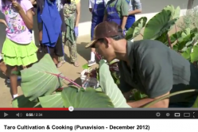

E ‘imi i na kānaka me ka mana‘o like a hana pū kākou.
Find the idea people and work with them.
Kaipo‘i Kelling describes himself as a “black moth on the wall.” He is a kumu, an educator.
Jerry Konanui is a Native Hawaiian Mahi‘ai (farmer) who gathers, grows, maintains and provides the many varieties of Hawaiian food crops. As a resource person he is called upon to provide hands on workshops on identification of Hawaiian food plants, their varieties, their propagation, cultivation, harvesting, processing and use throughout the Islands.
Penny Levin is a taro farmer on Maui. She is also a restoration ecologist, conservation planner, and executive director of E kupaku ka ‘aina - The Hawai‘i Land Restoration Institute.
Ben Trevino has spent the last 5 plus years enabling organizations through technology and enriching communities by delivering high quality film-going experiences. With a BS in computer science from Stanford University, Ben led technical initiatives for an anti-click-fraud team at Google. After moving to Hawaii in 2006, he joined the Hawaii International Film Festival (HIFF) and strengthened their technical infrastructure by initiating and co-developing an intranet/database system. He later took on the role of Director of Operations for HIFF while also managing theater operations for HIFF’s 2007 and 2008 festivals. Currently, Ben provides database development services the University of Hawaii Economic Research Organization (UHERO) as well as programming and operational support for Interisland Terminal.

For Weston Yap this website is a love letter to Hawai‘i. It's a pay of respect to mentors, friends, ‘ohana and Jesus Christ. He served in the U.S. Peace Corps in Pohnpei, FSM. Mentors told him to, “Find the idea people and work with them,” John 21:15, “Feed my lambs,” and "Chew with your mouth closed." In his insurance career he studies the challenges that farms and markets face.
See this educational video Punavision: Taro Cultivation and Cooking. Runs 2:34. Link to Youtube.
We can be reached at our Kupunakalo Facebook site or .(JavaScript must be enabled to view this email address).